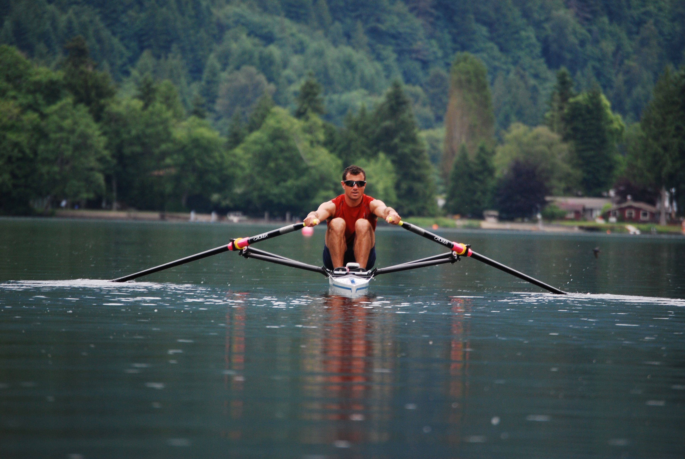

The Official website of FISA, the international rowing federation. Latest world rowing news

Starting this year, the age categories have been adjusted for masters rowers. There have been two age categories added to the World Rowing competition format. This is to encourage more participation, regardless of age or level.